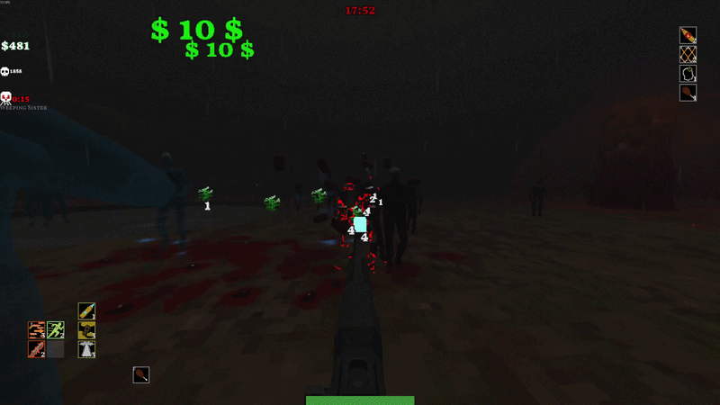
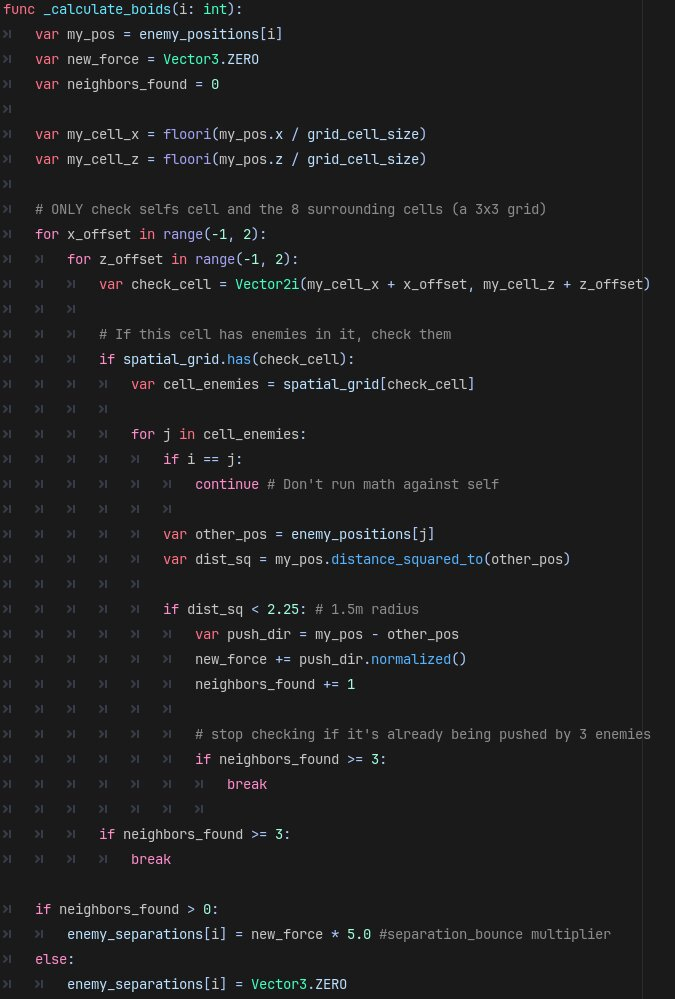
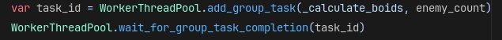
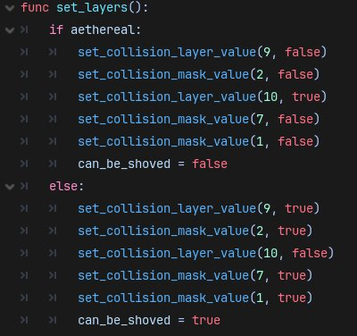
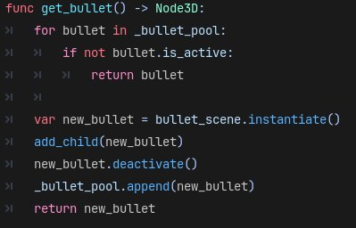
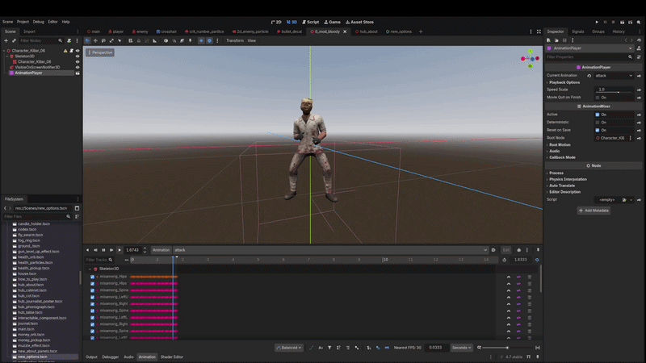
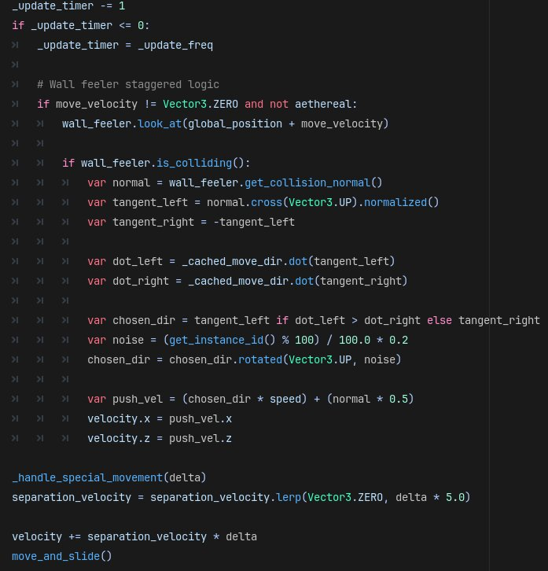
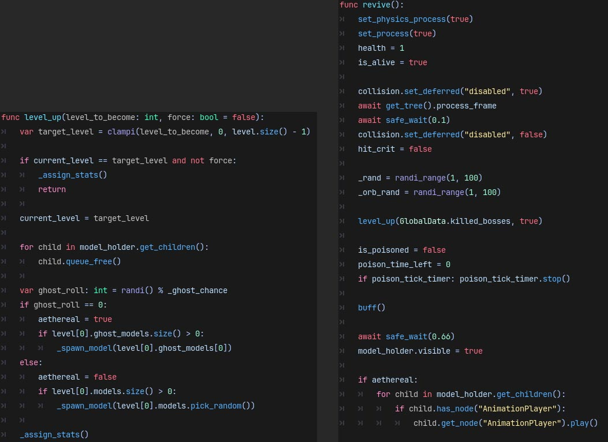

Case Study: BLOOD WELKIN (Godot)

The Problem: The enemy horde needed to feel like a horde, not just 15-20 entities on screen at any given time. I needed 65+ enemies on screen with their own collisions without tanking Godot’s performance.
The Solution: I'm breaking this section up into two sub-categories. Architectural & Algorithmic Optimizations: big changes that have an immediate effect on gameplay, and Engine & Memory Optimizations: small changes that, alone, are small, but with many of them running results in meaningful changes. Read about them below:
Architectural & Algorithmic Optimizations:
1- Boids: I reworked a popular boid-style collision system to work on a smaller, lighter scale. I have the in-game world divided into a grid of small square “cells.” Each enemy assigns itself to the cell it is inside, and only calculates its separation collisions with up to 3 other enemies inside the same cell. That way I can have a large number of enemies on screen at once, but the number of collision detections is incredibly minor compared to the entity count.

2- Multithreading: I multithread the separation calculations, so the main thread can run all the other in-game logic, while I use the other thread to only calculate enemy separation collisions and velocity.

_calculate_boids, the function explained above) to a different thread than the main thread.Engine & Memory Optimizations:
1- Aggressive Layer Masking: Since there are a lot of entities running at once, I needed to reduce the amount of costly String comprising as possible. An in-game money drop needs to detect collision so it knows if the player picked it up, but if it's on the same collision layer as enemies, it will be making String comparison checks every time an enemy enters its collision. Times that by the amount of money drops and enemies on screen, and that amounts to an overwhelming amount of slow, String checks.

2- Object Pooling: This is incredibly useful for optimization since during gameplay, there are many scenes/nodes appearing and disappearing rapidly. With pooling, I don't need to constantly instantiate and destroy them. Godot claims it doesn't have garbage collection, but I found BLOOD WELKIN runs better when scenes and particles are pre-warmed and reused. I use a similar yet more advanced technique with enemies, explained in section 6.

3- Linear Pathfinding: While using a navmesh system would make the enemies feel smarter, it comes at a cost of performance. Enemies will only partially pathfind in BLOOD WELKIN. Each one has a "wall feeler" that will detect a wall in front of it and attempt to walk around it (explained in section 5). This does mean they will sometimes get stuck on world geometry. However, the main gameplay loop is killing enemies, so enemies seldom survive long enough to get stuck.
4- Pre-baking and Simplifying Animations: I used mixamo for enemy animations, but those come with a lot of keyframes, smoothing, etc. which can be a burden on the game's performance. I circumvented that by reducing animation keyframes and smoothing as well as pre-baking animations. While this results in the animations looking choppy (i.e less smooth), I believe that is a good compromise, as choppy animations lends itself to the game's overall aesthetic.

5- Reducing Checks: I run enemy checks every 30 frames. This takes tons of weight off the CPU with minimal effect on player perception and gameplay.

_update_timer variable reduces by 1. Once it's less than or equal to 0, re-assign itself the number of the _update_freq (in this case, 30). So every 30 frames the game runs the following logic: If I am moving and I'm not a ghost enemy: Look in the direction I'm walking. If I am touching a wall, slightly change my trajectory. After that, set my speed and walk towards what I am looking at.6- Pooling and Reusing Enemies: Since the player is constantly killing enemies, enemies need to be constantly coming at the player. I knew from the start I wanted BLOOD WELKIN to be a “survivors” type game and those games don’t have set waves, rather an endless horde constantly accosts the player. To achieve this, I have a timer on the main GameManager Node which counts down to 0, when it reaches 0 it adds more enemies to the pool. When an enemy is killed, it instantly teleports to one of the many spawn points outside the world bounds and begins walking again. Every time the player kills a boss, it signals to every enemy that upon their next revive, to “level-up.” This makes the enemies harder to kill and faster by a slight margin, and it also adds a small chance for the enemy’s 3D model to distort. Enemies also have a chance to spawn as a ghost upon every revive. They do not need to walk around buildings as they can just coax their way through them and they take less damage unless the player buys a special item in the shop.
